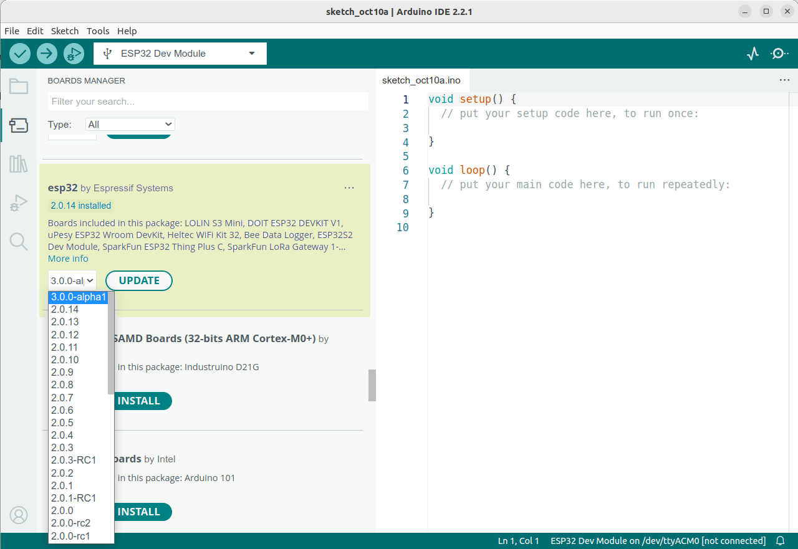
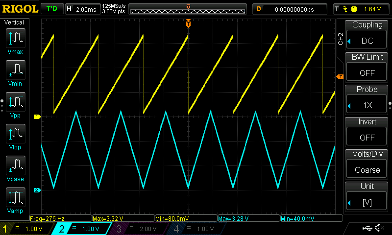
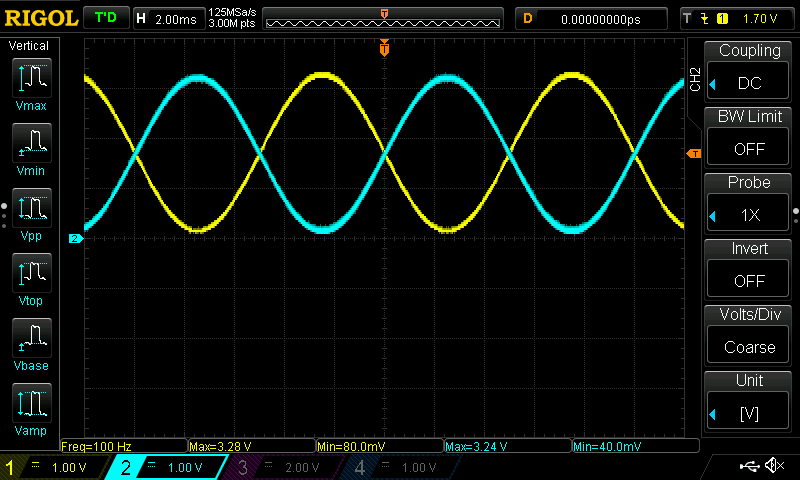
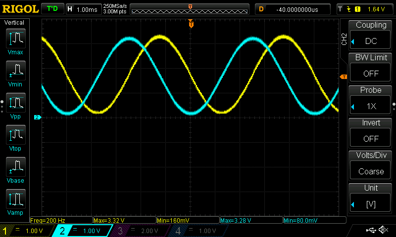
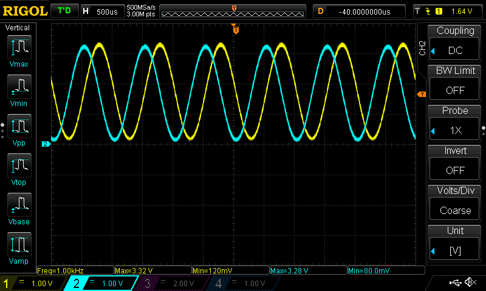
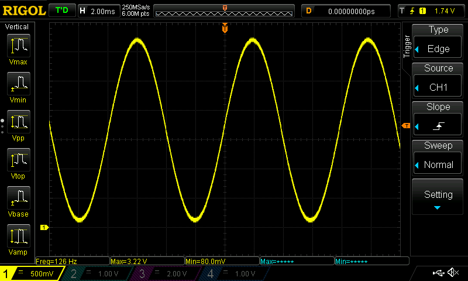
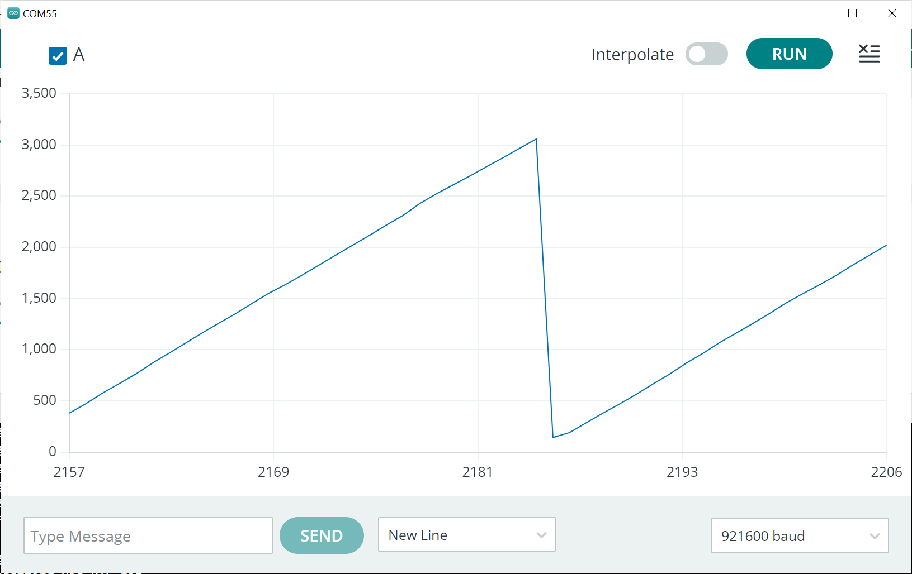
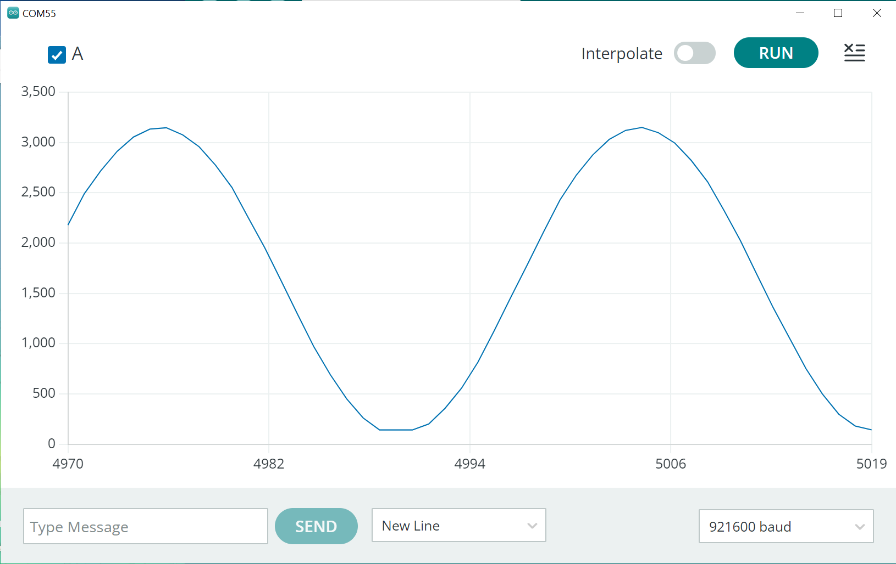

การสร้างสัญญาณแอนะล็อกด้วยวงจร DAC ของชิป ESP32#
Keywords: Arduino, ESP32, ESP32 DAC
▷ ESP32 DAC#
ชิป ESP32 สามารถสร้างสัญญาณเอาต์พุตแบบแอนะล็อกได้ (Analog Output) โดยใช้วงจรภายในคือ DAC (Digital-to-Analog Converter) ซึ่งมีจำนวน 2 ช่องสัญญาณเอาต์พุต (DAC0 / GPIO25 และ DAC1 / GPIO26) การเขียนค่าเพื่อใช้กับ DAC มีความละเอียดของข้อมูลเท่ากับ 8 บิต
บทความนี้นำเสนอตัวอย่างการใช้งานวงจร DAC ภายในชิป ESP32 ในเบื้องต้น และโค้ดตัวอย่าง Arduino Sketch สำหรับสาธิตการทำงานของวงจรดังกล่าว
การทำงานของ DAC ของแต่ละช่องสัญญาณ แบ่งออกได้เป็น 3 กรณี
- One-Shot Mode ในโหมดนี้ จะต้องมีการเขียนข้อมูล 8 บิต เพื่อใช้เป็นสัญญาณเอาต์พุตในแต่ละครั้ง
- Cosine Waveform (CW) Mode ในโหมดนี้ วงจร DAC สามารถสร้างสัญญาณแอนะล็อกรูปคลื่นไซน์ (Sinusoidal Waveform) ตามความถี่ที่กำหนดไว้ โดยใช้วงจรที่เรียกว่า Cosine Waveform Generator
- DMA-based Continuous Mode ในโหมดนี้ จะใช้ชุดข้อมูลในหน่วยความจำที่กำหนดไว้ แล้วนำข้อมูลไปใช้ตามลำดับ โดยใช้วงจร I2S Controller ทำหน้าที่ดังกล่าว
ข้อสังเกต: Espressif ESP-IDF มีการปรับปรุงจากเวอร์ชัน 4.x ไปเป็น 5.x และมีการเปลี่ยนรูปแบบการเขียนโค้ดสำหรับ DAC Driver ใหม่ (เช่น หากใช้ ESP-IDF v5.1 จะแตกต่างจาก ESP-IDF v4.4)
ดังนั้นการเขียนโค้ดที่ใช้ ESP-IDF API จึงแบ่งออกเป็น 2 กรณี คือ แบบเก่าและแบบใหม่
- Old (legacy) DAC Driver:
#include <driver/dac.h>#include <driver/dac_common.h>#include <soc/dac_channel.h>
- New DAC Driver:
#include <driver/dac_oneshot.h>#include <driver/dac_cosine.h>#include <driver/dac_continuous.h>
ในขณะที่เขียนบทความนี้ Arduino ESP32 Core มีสองตัวเลือก
- Stable Release: v2.0.14 (ESP-IDF v4.4.6):
arduino-esp32/package_esp32_index.json - Development Release: v3.0.0 (ESP-IDF v5.1)
arduino-esp32/package_esp32_dev_index.json

รูป: Arduino ESP32 v3.0.0

รูป: การติดตั้ง Arduino ESP32 v3.0.0
การเขียนโค้ดสำหรับ Arduino เพื่อใช้งานวงจร DAC
ทำได้สะดวก เนื่องจากมีฟังก์ชัน dacWrite(...) ซึ่งจะใช้งาน DAC
ในโหมด One-Shot
นอกจากนั้นแล้ว การจัดทำไลบรารีเอาไว้ให้ใช้งาน เช่น
yellobyte/DacESP32:
สามารถใช้ในการสร้างสัญญาณแอนะล็อกด้วย DAC ในโหมด One-Shot และ
Cosine Waveform แต่จะใช้ได้กับ Arduino ESP32 Core v2.0.x (Legacy DAC Driver)
ยังไม่รองรับ v3.0.0
ในบทความนี้ จะกล่าวถึง การทดลองการใช้งานเฉพาะ Arduino ESP32 Core v3.0.0 เท่านั้น เพื่อใช้งานวงจร DAC ในโหมดต่าง ๆ
▷ โค้ดตัวอย่างที่ 1: การใช้งาน ESP32-DAC ในโหมด One-Shot#
ตัวอย่างโค้ดถัดไปสาธิตการสร้างสัญญาณแอนะล็อกเอาต์พุต 2 ช่องพร้อมกัน โดยใช้วงจร DAC ในโหมด One-Shot และมีการเรียกใช้ฟังก์ชันของ ESP-IDF DAC Driver ดังนี้
dac_oneshot_new_channel(...)ตั้งค่าการใช้งานสำหรับ DAC Channeldac_oneshot_output_voltage(...)กำหนดค่าขนาด 8 บิต (0..255) สำหรับเอาต์พุตให้ DAC Channel
#include <hal/dac_types.h>
#include <driver/dac_oneshot.h>
dac_oneshot_handle_t dac0_handle = NULL;
dac_oneshot_handle_t dac1_handle = NULL;
void initDAC() {
// DAC configuration for DAC channel 0
dac_oneshot_config_t chan0_cfg = {
.chan_id = DAC_CHAN_0
};
// DAC configuration for DAC channel 1
dac_oneshot_config_t chan1_cfg = {
.chan_id = DAC_CHAN_1
};
// Create two DAC channels in one-shot mode.
dac_oneshot_new_channel( &chan0_cfg, &dac0_handle );
dac_oneshot_new_channel( &chan1_cfg, &dac1_handle );
}
void outputDAC( uint32_t value ) {
// Write DAC outputs.
dac_oneshot_output_voltage( dac0_handle, value );
value = (value > 127) ? 255-value : value;
dac_oneshot_output_voltage( dac1_handle, value<<1 );
}
void setup() {
Serial.begin(115200);
initDAC();
delay(1000);
}
void loop() {
static uint32_t level = 0;
outputDAC( level ); // execution time: 7~8 usec
level = (level+1) % 256;
}
ในตัวอย่างนี้ สัญญาณเอาต์พุตทั้งสองช่อง มีการอัปเดตค่าพร้อมกันเมื่อทำคำสั่งของฟังก์ชัน
outputDAC(...) แต่ใช้ค่าที่แตกต่างกัน และจะได้รูปคลื่นสัญญาณแตกต่างกัน

รูป: ตัวอย่างสัญญาณเอาต์พุตทั้งสองช่อง เมื่อวัดด้วยออสซิลโลสโคป (CH1=DAC0 และ CH2=DAC1)
▷ โค้ดตัวอย่างที่ 2: การใช้งาน ESP32-DAC ในโหมด One-Shot ร่วมกับ Hardware Timer#
ตัวอย่างถัดไปสาธิตการสร้างสัญญาณเอาต์พุตด้วย DAC ทั้งสองช่องพร้อมกัน ในโหมด One-Shot และมีการใช้งานร่วมกับวงจร General-Purpose Timer (GPTimer) ที่ได้ตั้งค่าความละเอียดในการนับไว้ 1 usec (ไมโครวินาที) และใช้วงจรเวลานี้ เพื่อสร้างอินเทอร์รัพท์ และให้ฟังก์ชันที่ทำหน้าที่เป็น Callback Function อัปเดตค่าเอาต์พุตสำหรับช่องสัญญาณของ DAC ด้วยอัตราคงที่
การสร้างสัญญาณเอาต์พุต จะใช้วิธีอ่านค่าจากตารางข้อมูลรูปคลื่นไซน์
(ในโค้ดตัวอย่างนี้ ได้กำหนดขนาดของตารางไว้เท่ากับ 256 ที่มีค่าตัวเลขขนาด 8 บิต
อ้างอิงโดยตัวแปรแบบอาร์เรย์ชื่อ WAVE_TABLE) ไปตามลำดับแล้ววนซ้ำใหม่
เพื่อนำไปใช้กับ DAC ความถี่ของสัญญาณเอาต์พุตที่ได้คือ 100Hz
และสัญญาณทั้งสองช่องเป็นรูปคลื่นไซน์ และมีความถี่เท่ากัน แต่มีแอมพลิจูดตรงข้ามกัน
#include <hal/dac_types.h>
#include <driver/dac_oneshot.h>
#include <driver/gptimer.h>
gptimer_handle_t gptimer = NULL;
dac_oneshot_handle_t dac0_handle = NULL;
dac_oneshot_handle_t dac1_handle = NULL;
#define FREQ_HZ (100)
#define RESOLUTION_1MHZ (1000000UL)
const uint32_t TABLE_SIZE = 256;
uint8_t WAVE_TABLE[ TABLE_SIZE ];
volatile uint32_t sin_index = 0;
// GPTimer Callback Function
bool IRAM_ATTR on_timer_alarm_cb( gptimer_handle_t timer,
const gptimer_alarm_event_data_t *edata, void *user_data )
{
outputDAC( WAVE_TABLE[sin_index] );
sin_index = (sin_index+1) % TABLE_SIZE;
return false;
}
void initTimer() { // Initialize the timer
gptimer_config_t timer_config = {
.clk_src = GPTIMER_CLK_SRC_DEFAULT,
.direction = GPTIMER_COUNT_UP,
.resolution_hz = RESOLUTION_1MHZ // 1MHz, 1 tick = 1us
};
gptimer_new_timer( &timer_config, &gptimer );
gptimer_alarm_config_t alarm_config = {
.alarm_count = RESOLUTION_1MHZ/(TABLE_SIZE*FREQ_HZ),
.reload_count = 0,
.flags = { .auto_reload_on_alarm = true }
};
gptimer_event_callbacks_t cbs = {
.on_alarm = on_timer_alarm_cb
};
gptimer_register_event_callbacks( gptimer, &cbs, NULL );
gptimer_set_alarm_action( gptimer, &alarm_config );
gptimer_enable( gptimer );
gptimer_start( gptimer );
}
void initDAC() {
dac_oneshot_config_t chan0_cfg = {
.chan_id = DAC_CHAN_0
};
dac_oneshot_config_t chan1_cfg = {
.chan_id = DAC_CHAN_1
};
dac_oneshot_new_channel( &chan0_cfg, &dac0_handle );
dac_oneshot_new_channel( &chan1_cfg, &dac1_handle );
outputDAC( 127 );
}
inline void outputDAC( uint32_t value ) {
dac_oneshot_output_voltage( dac0_handle, value );
dac_oneshot_output_voltage( dac1_handle, 255-value );
}
void setup() {
Serial.begin(115200);
// Create a table (array) for sine-waveform data.
for (int i=0; i < TABLE_SIZE; i++) {
WAVE_TABLE[i] = (127)*(sin(2*PI*i/TABLE_SIZE)+1);
}
initDAC(); // Initialize DAC in one-shot mode.
initTimer(); // Initialize general-purpose timer.
delay(1000);
}
void loop() {
}

รูป: ตัวอย่างสัญญาณเอาต์พุตทั้งสองช่อง เมื่อวัดด้วยออสซิลโลสโคป (CH1=DAC0 และ CH2=DAC1)
▷ โค้ดตัวอย่างที่ 3: การใช้งาน ESP32-DAC ในโหมด Continuous#
โค้ดตัวอย่างถัดไปสาธิตการใช้งาน DAC ในโหมด Continuous
โดยใช้ DMA Controller ทำหน้าที่อ่านค่าจากอาร์เรย์ (WAVE_TABLE)
ซึ่งเป็นตารางข้อมูลสำหรับรูปคลื่นไซน์ แล้วนำไปใช้เป็นค่าเอาต์พุตสำหรับ DAC ตามลำดับ
การทำงานของ DAC ในโหมด Continuous มีสองรูปแบบ
DAC_CHANNEL_MODE_SIMULใช้ข้อมูลร่วมกันทั้งสองช่องเหมือนกันพร้อมกันDAC_CHANNEL_MODE_ALTERใช้ข้อมูลร่วมกันแต่แบ่งกันโดยสลับกันไประหว่างสองช่อง
ในตัวอย่างนี้ ข้อมูลในอาร์เรย์ WAVE_TABLE ถ้าเป็นแอดเดรสที่เป็นเลขคู่ (0,2,4,...)
จะเป็นข้อมูลสำหรับช่อง DAC0 แต่ถ้าเป็นแอดเดรสที่เป็นเลขคี่ (1,3,5,...) จะใช้สำหรับช่อง DAC1
#include <hal/dac_types.h>
#include <driver/dac_continuous.h>
const uint32_t freq = 200;
const uint32_t TABLE_SIZE = 256;
uint8_t WAVE_TABLE[ TABLE_SIZE ];
dac_continuous_handle_t dac_cont_handle = NULL;
void initDAC() {
dac_continuous_config_t dac_cont_cfg = {
.chan_mask = DAC_CHANNEL_MASK_ALL,
.desc_num = 8,
.buf_size = 2048,
.freq_hz = (TABLE_SIZE*freq)/2,
.offset = 0,
.clk_src = DAC_DIGI_CLK_SRC_DEFAULT,
.chan_mode = DAC_CHANNEL_MODE_ALTER // alternate output
};
dac_continuous_new_channels( &dac_cont_cfg, &dac_cont_handle );
dac_continuous_enable( dac_cont_handle );
}
void setup() {
Serial.begin(115200);
for (int i=0; i < TABLE_SIZE; i+=2) {
float arg = 2*PI*i/TABLE_SIZE;
WAVE_TABLE[i] = (127)*(1+sin(arg));
WAVE_TABLE[i+1] = (127)*(1+cos(arg));
}
// Initialize DAC in DMA continuous mode.
initDAC();
delay(1000);
// Apply the waveform data to DMA-based DAC output.
dac_continuous_write_cyclically( dac_cont_handle,
WAVE_TABLE, TABLE_SIZE, NULL );
}
void loop() {
}

รูป: ตัวอย่างคลื่นสัญญาณทั้งสองช่อง (ความถี่ 200Hz)

รูป: ตัวอย่างคลื่นสัญญาณทั้งสองช่อง (เมื่อตั้งค่าความถี่เป็น 10kHz)
แต่ถ้าจะใช้วงจร DAC ในโหมด DMA-based Continuous สำหรับช่องเอาต์พุตเพียงช่องเดียว เช่น DAC0 ก็มีตัวอย่างดังนี้
#include <hal/dac_types.h>
#include <driver/dac_oneshot.h>
#include <driver/dac_continuous.h>
const uint32_t freq = 100;
const uint32_t TABLE_SIZE = 256;
uint8_t WAVE_TABLE[ TABLE_SIZE ];
dac_continuous_handle_t dac_cont_handle = NULL;
void initDAC() {
dac_continuous_config_t dac_cont_cfg = {
.chan_mask = DAC_CHANNEL_MASK_CH0, // only DAC0 channel
.desc_num = 8,
.buf_size = 2048,
.freq_hz = (TABLE_SIZE*freq),
.offset = 0,
.clk_src = DAC_DIGI_CLK_SRC_DEFAULT,
.chan_mode = DAC_CHANNEL_MODE_SIMUL
};
dac_continuous_new_channels( &dac_cont_cfg, &dac_cont_handle );
dac_continuous_enable( dac_cont_handle );
}
void setup() {
Serial.begin(115200);
for (int i=0; i < TABLE_SIZE; i++) {
float arg = 2*PI*i/TABLE_SIZE;
WAVE_TABLE[i] = 127*(1+sin(arg));
}
// Initialize DAC in DMA continuous mode.
initDAC();
delay(1000);
// Apply the waveform data to DMA-based DAC output.
dac_continuous_write_cyclically( dac_cont_handle,
WAVE_TABLE, TABLE_SIZE, NULL );
}
void loop() {
}
▷ โค้ดตัวอย่างที่ 4: การใช้งาน ESP32-DAC ในโหมด Cosine-Waveform#
ตัวอย่างนี้สาธิตการสร้างสัญญาณเอาต์พุต โดยใช้ DAC ในโหมด Cosine-Waveform (CW) Generator ทั้งสองช่องเอาต์พุต ซึ่งมีความถี่เหมือนกัน ตั้งค่า Offset ให้เป็น 0 แต่กำหนดให้ DAC0 มีแอมพลิจูดตามปรกติ มีมุมเริ่มต้นเป็น 0 องศา และให้ DAC1 มีแอมพลิจูด 1/2 (เป็นครึ่งหนึ่งของขนาดปรกติ) มีมุมเริ่มต้นเป็น 180 องศา (เลือกได้แค่ 0 หรือ 180 องศา เท่านั้น)
#include <hal/adc_types.h>
#include <hal/dac_types.h>
#include <hal/clk_tree_ll.h>
#include <driver/dac_cosine.h>
/*
DAC Cosine Waveform Generation: Amplitude Scaling
- 1/1 amplitude: DAC_COSINE_ATTEN_DB_0 (DAC_COSINE_ATTEN_DEFAULT)
- 1/2 amplitude: DAC_COSINE_ATTEN_DB_6
- 1/4 amplitude: DAC_COSINE_ATTEN_DB_12
- 1/8 amplitude: DAC_COSINE_ATTEN_DB_18
Phase:
- DAC_COSINE_PHASE_0
- DAC_COSINE_PHASE_180
*/
dac_cosine_handle_t chan0_handle;
dac_cosine_handle_t chan1_handle;
void outputCW( uint32_t freq = 130 ) {
dac_cosine_config_t cos0_cfg = {
.chan_id = DAC_CHAN_0, // GPIO25 pin on ESP32
.freq_hz = freq, // DAC frequency in Hz
.clk_src = DAC_COSINE_CLK_SRC_DEFAULT, // RC_FAST
.atten = DAC_COSINE_ATTEN_DEFAULT, // normal amplitude
.phase = DAC_COSINE_PHASE_0, // phase value (0 or 180)
.offset = 0, // offset value -128 ~ +127
.flags = { .force_set_freq = true }
};
dac_cosine_config_t cos1_cfg = {
.chan_id = DAC_CHAN_1, // GPIO26 pin on ESP32
.freq_hz = freq, // DAC frequency in Hz
.clk_src = DAC_COSINE_CLK_SRC_DEFAULT, // RC_FAST
.atten = DAC_COSINE_ATTEN_DB_6, // 1/2 amplitude
.phase = DAC_COSINE_PHASE_180, // phase value (0 or 180)
.offset = 0, // offset value -128 ~ +127
.flags = { .force_set_freq = true } // overwrite current freq.
};
if ( chan0_handle != NULL ) {
dac_cosine_stop( chan0_handle );
dac_cosine_del_channel( chan0_handle );
}
if ( chan1_handle != NULL ) {
dac_cosine_stop( chan1_handle );
dac_cosine_del_channel( chan1_handle );
}
// Configure the DAC-CW channel 0 and channel 1.
dac_cosine_new_channel( &cos0_cfg, &chan0_handle );
dac_cosine_new_channel( &cos1_cfg, &chan1_handle );
// Start te DAC-CW Generator on DAC channel 0 and 1.
dac_cosine_start( chan0_handle );
dac_cosine_start( chan1_handle );
}
void setup() {
Serial.begin(115200);
delay(1000);
uint32_t clk_div = clk_ll_rc_fast_get_divider();
Serial.printf( "Clock divider: %lu\n", clk_div );
Serial.printf( "The lowest frequency: %lu Hz\n", 130/clk_div );
}
const uint32_t Fmin = 130, Fmax = 300, Fstep = 10;
void loop() {
for (uint32_t freq=Fmin; freq <= Fmax; freq+=Fstep ) {
Serial.printf( "Freq. %4lu Hz\n", freq );
outputCW( freq );
delay(2000);
}
}
ข้อจำกัดในการใช้งาน DAC ในโหมด CW คือ
- การเลือกค่าความถี่ จะต้องมีค่าอย่างน้อย 130Hz (ถ้าตั้งค่าตัวหารความถี่ไว้ 1) และค่าที่วัดได้จริง อาจจะมีความคลาดเคลื่อนได้ เนื่องจากวงจร DAC CW Generator ใช้วงจร Internal Fast RC Oscillator สร้างสัญญาณ Clock ภายใน และอาจจะมีความคลาดเคลื่อนได้
- ทั้งสองช่องเอาต์พุต ใช้ความถี่เหมือนกัน แต่ต่างเฟสได้ 0 หรือ 180 องศา
- ค่าความถี่ที่ใช้ได้ จะไม่ต่อเนื่อง เช่น ถ้าลองตั้งค่าความถี่เริ่มต้นจาก 130Hz เพิ่มทีละ 10Hz ไปจนถึง 300Hz ค่าความถี่ที่วัดได้จริงคือ 126Hz และสัญญาณเอาต์พุตจะเริ่มเปลี่ยนความถี่เป็น 252Hz เมื่อตั้งค่าเป็น 260Hz หรือมากกว่า
จากการทดลองตั้งค่าและการวัดความถี่ที่ได้จริง มีตัวอย่างดังนี้
| Output Value | Measured Frequency (Hz) |
|---|---|
| 130 | ~126 |
| 260 | ~252 |
| 390 | ~380 |
| 520 | ~510 |
| 650 | ~641 |
| 780 | ~757 |
| 910 | ~893 |
| 1040 | ~1.04k |
| 1170 | ~1.14k |
| 1300 | ~1.26k |
| 2600 | ~2.5k |

รูป: ตัวอย่างคลื่นสัญญาณช่อง DAC0 (วัดความถี่ได้ 126Hz เมื่อตั้งค่าเป็น 130)
▷ โค้ดตัวอย่างที่ 5: การหาระยะเวลาในการทำคำสั่ง dacWrite()#
ตัวอย่างถัดไปสาธิตการใช้คำสั่ง dacWrite(...)
ของ Arduino API และจับเวลาในการทำคำสั่งแต่ละครั้ง
void setup() {
Serial.begin(115200);
}
const int DAC_PIN = DAC1; // Use either DAC1 or DAC2.
void loop() {
const uint32_t N = 256;
uint32_t t0 = esp_timer_get_time();
for (uint32_t level = 0; level < N; level++) {
dacWrite( DAC_PIN, (uint8_t)level ); // DAC output
}
uint32_t t1 = esp_timer_get_time();
uint32_t t_diff = (t1-t0); // Time difference in usec.
Serial.printf( "Time difference: %lu usec\n", t_diff );
Serial.printf( "Time difference: %.1f usec per loop\n",
((float)t_diff)/N );
delay(1000);
}
จากข้อความเอาต์พุตที่ได้นำมาเป็นตัวอย่าง แสดงค่าตัวเลขต่อหนึ่งรอบ
ดังนั้นการทำคำสั่ง dacWrite() ต่อหนึ่งครั้ง จะใช้เวลาไม่เกิน 3.7 ไมโครวินาที
Time difference: 945 usec
Time difference: 3.7 usec per loop
▷ โค้ดตัวอย่างที่ 6: การทำคำสั่ง dacWrite() และ analogRead()#
โค้ดตัวอย่างถัดไปสาธิตการใช้คำสั่ง dacWrite() เพื่อสร้างสัญญาณแอนะล็อก
และใช้คำสั่ง analogRead() เพื่ออ่านค่าแอนะล็อกจากแรงดันอินพุต โดยเลือกใช้ขา
DAC1 / GPIO25 สำหรับเอาต์พุต และขา ADC1_CH6 / GPIO34 สำหรับอินพุต
ดังนั้นในการทดลองจริง จะต้องมีการเชื่อมต่อขาทั้งสองด้วยลวดสายไฟหรือตัวต้านทาน
การอ่านค่า ADC จะเกิดขึ้นด้วยอัตราคงที่ โดยอาศัยการทำงานของ General-Purpose Timer และเปิดใช้งานอินเทอร์รัพท์ เพื่อทำให้ฟังก์ชัน Callback ได้อ่านค่าจาก ADC Input ตามอัตราที่กำหนดไว้ ค่าที่อ่านได้ในแต่ละครั้งซึ่งถูกแปลงเป็นค่าแรงดันไฟฟ้า (หน่วยเป็นมิลลิโวลต์) จะถูกส่งผ่าน FreeRTOS Queue ไปยังทาสก์หลักของโปรแกรม และจะมีการปรับค่าเอาต์พุตสำหรับ DAC
const int ADC_PIN = 34; // ADC1_CH6 / GPIO34
const int DAC_PIN = DAC1; // GPIO25
// A FreeRTOS queue used to store ADC values
QueueHandle_t adc_queue;
uint8_t level = 0;
// Callback function of the hardware timer.
void IRAM_ATTR timer_callback() {
uint32_t value = analogReadMilliVolts( ADC_PIN );
dacWrite( DAC_PIN, level += 8 );
BaseType_t xHigherPriorityTaskWoken = pdFALSE;
// Send the ADC value to the FreeRTOS queue
xQueueSendFromISR(adc_queue, &value, &xHigherPriorityTaskWoken);
if (xHigherPriorityTaskWoken == pdTRUE) {
portYIELD_FROM_ISR();
}
}
// Initialize the ADC input channel.
void initADC() {
// Set ADC resolution to 12 bits
analogSetWidth( 12 );
// Set attenuation level to 11 dB.
analogSetPinAttenuation( ADC_PIN, ADC_11db );
}
// Initialize the hardware timer.
void initTimer( uint32_t hw_timer_unit=0 ) {
static hw_timer_t *timer = NULL;
timer = timerBegin( 1000000UL ); // 1MHz (1us tick)
timerWrite(timer, 0);
// Attach the callback function (ISR) to the timer
timerAttachInterrupt( timer, &timer_callback );
timerAlarm(timer, 1000, true /*reload*/, 0 /*reload value*/);
timerRestart(timer);
}
void setup() {
// Initialize the Serial (use baudrate of 921600)
Serial.begin(921600);
Serial.print("\n\n\n");
Serial.flush();
// Create a FreeRTOS queue object.
adc_queue = xQueueCreate(16, sizeof(uint32_t));
initADC(); // Initialize the ADC.
dacWrite( DAC_PIN, 0 );
// Initialize the hardware timer.
initTimer();
}
void loop() {
uint32_t adc_reading;
if (xQueueReceive(adc_queue, &adc_reading, portMAX_DELAY)) {
Serial.printf( "A:%lu\n", adc_reading );
}
}

รูป: ตัวอย่างการแสดงผลข้อมูลที่ได้รับใน Arduino Serial Plotter
หากจะลองเปลี่ยนไปใช้ DAC CW Waveform Generator เพื่อสร้างสัญญาณเอาต์พุตรูปคลื่นไซน์
โดยเลือกใช้ช่อง DAC0 / GPIO25 เพียงช่องเดียว และอ่านค่าอินพุตด้วยคำสั่ง analogReadMilliVolts()
โดยตั้งอัตราการอ่านค่าจาก ADC ให้สูงขึ้น (เพิ่มค่า Sampling Rate เช่น 1/250usec = 4k Samples/sec)
และกำหนดค่า Baudrate ให้สูงขึ้นเป็น 921600 ก็มีตัวอย่างการเขียนโค้ดดังนี้
#include <hal/adc_types.h>
#include <hal/dac_types.h>
#include <driver/dac_cosine.h>
const int ADC_PIN = 34; // ADC1_CH6 / GPIO34
// A FreeRTOS queue used to store ADC values
QueueHandle_t adc_queue;
uint8_t level = 0;
// Callback function of the hardware timer.
void IRAM_ATTR timer_callback() {
uint32_t value = analogReadMilliVolts( ADC_PIN );
BaseType_t xHigherPriorityTaskWoken = pdFALSE;
// Send the ADC value to the FreeRTOS queue
xQueueSendFromISR(adc_queue, &value, &xHigherPriorityTaskWoken);
if (xHigherPriorityTaskWoken == pdTRUE) {
portYIELD_FROM_ISR();
}
}
// Initialize the ADC input channel.
void initADC() {
// Set ADC resolution to 12 bits
analogSetWidth( 12 );
// Set attenuation level to 11 dB.
analogSetPinAttenuation( ADC_PIN, ADC_11db );
}
// Initialize the hardware timer.
void initTimer( uint32_t hw_timer_unit=0 ) {
static hw_timer_t *timer = NULL;
timer = timerBegin( 1000000UL ); // 1MHz (1us tick)
timerWrite(timer, 0);
// Attach the callback function (ISR) to the timer
timerAttachInterrupt( timer, &timer_callback );
timerAlarm(timer, 250, true /*reload*/, 0 /*reload value*/);
timerRestart(timer);
}
dac_cosine_handle_t dac_chan_handle;
void outputCW( uint32_t freq ) {
dac_cosine_config_t dac_cos_cfg = {
.chan_id = DAC_CHAN_0, // GPIO25 pin on ESP32
.freq_hz = freq, // DAC frequency in Hz
.clk_src = DAC_COSINE_CLK_SRC_DEFAULT, // RC_FAST
.atten = DAC_COSINE_ATTEN_DEFAULT, // normal amplitude
.phase = DAC_COSINE_PHASE_0, // phase value (0 or 180)
.offset = 0, // offset value -128 ~ +127
.flags = { .force_set_freq = true }
};
if ( dac_chan_handle != NULL ) {
dac_cosine_stop( dac_chan_handle );
dac_cosine_del_channel( dac_chan_handle );
}
// Configure the DAC-CW channel
dac_cosine_new_channel( &dac_cos_cfg, &dac_chan_handle );
// Start te DAC-CW Generator on DAC channel
dac_cosine_start( dac_chan_handle );
}
void setup() {
// Initialize the Serial (use baudrate of 921600)
Serial.begin(921600);
Serial.print("\n\n\n");
Serial.flush();
// Create a FreeRTOS queue object.
adc_queue = xQueueCreate(32, sizeof(uint32_t));
initADC(); // Initialize the ADC.
outputCW(150); // Set the DAC CW frequency (> 130)
// Initialize the hardware timer.
initTimer();
}
void loop() {
uint32_t adc_reading;
if (xQueueReceive(adc_queue, &adc_reading, portMAX_DELAY)) {
Serial.printf( "A:%lu\n", adc_reading );
}
}

รูป: ตัวอย่างการแสดงผลข้อมูลที่ได้รับใน Arduino Serial Plotter
▷ กล่าวสรุป#
บทความนี้ได้นำเสนอวิธีการและตัวอย่างการเขียนโค้ด Arduino สำหรับบอร์ดไมโครคอนโทรลเลอร์ ESP32 เพื่อสร้างสัญญาณแอนะล็อก โดยใช้วงจร DAC ในโหมดการทำงานที่แตกต่างกัน และได้ทดลองใช้ Arduino ESP32 Core v3.0.0 สำหรับการเขียนโค้ด
This work is licensed under a Creative Commons Attribution-ShareAlike 4.0 International License.
Created: 2023-10-10 | Last Updated: 2023-10-11